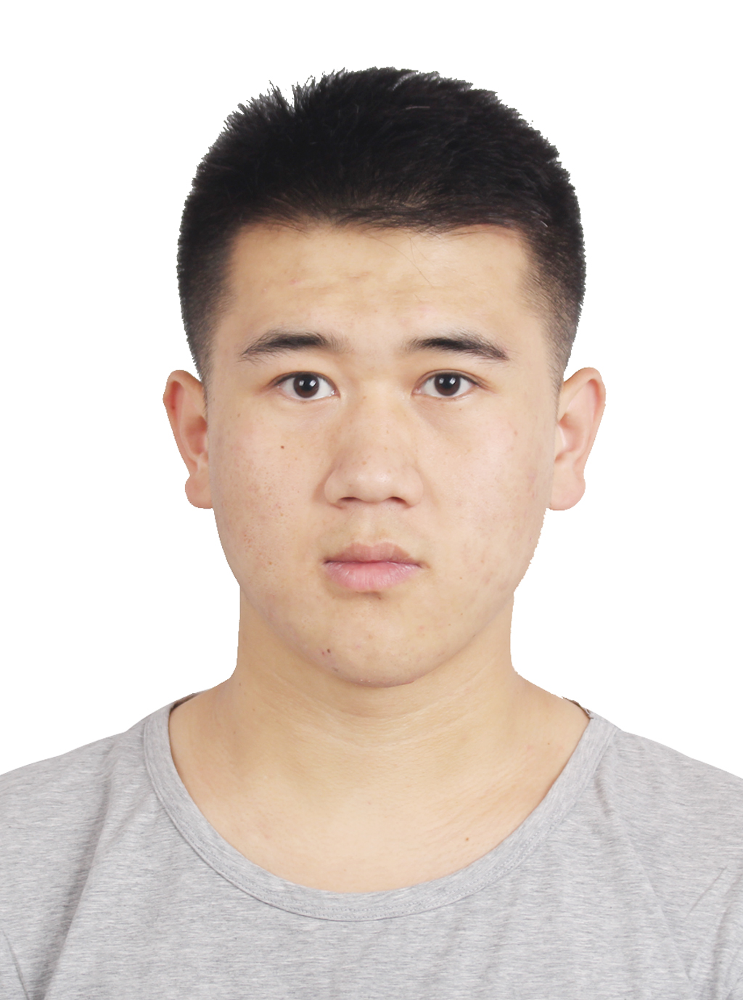

李彤
 18515441211
·
18515441211
·
 327578505@qq.com
327578505@qq.com
 个人信息
个人信息
|
 |
 教育经历
教育经历
|
|
北京理工大学 | 计算机学院计算机科学与技术专业 | 硕 士 |
|
|
吉林大学 | 软件学院软件工程专业 | 学 士 |
 研究工作
研究工作
- Image Captioning with Inherent Sentiment （ICME 2021 oral，CCF B类）
传统的stylized image captioning任务是为了生成一种固定风格的描述，而这种风格与图片无关甚至相反，为此，我们提出了一个新的任务：sentimental image captioning，它的目的是能够生成包含图片情感的语言描述。
为了解决新任务，我们提出了InSenti-Cap方法，首先提取图片的内容和情感信息，对于内容方面：通过训练好的Faster RCNN模型提取图片中显著物体的特征，并使用一个简单的多标签分类网络提取图片相关的属性词（包括名词和动词）；对于情感方面：通过一个图片情感分类器来获取图片的情感标签，并对情感语料库进行统计分析，获取情感先验知识（比如苍蝇往往和恶心等一些情感词密切联系）。之后，通过注意力机制将这些信息融合到情感描述的生成过程中，主要包括两层LSTM以及一个注意力模块，第一层注意力LSTM的功能是指导注意力模块当前时间步应当关注哪些信息，注意模块将内容和情感的融合特征传递给第二层语言LSTM，从而生成当前的单词。
由于没有配对的图片-情感描述数据集，并且收集该数据集的代价较大，我们提出了一个两阶段训练策略，在预训练阶段，使用配对的图片-事实描述训练模型，并通过情感句子重构任务提供一个正则项，让模型学会如何在生成的句子中加入情感元素；在微调阶段，加入了强化学习，并通过训练好的句子情感分类器提供一种新的情感奖励，从而使模型生成更具情感的描述。
我们以图片情感检测器检测出的标签作为指定风格，从而和最新的stylized image captioning方法进行了比较，并且在内容（CIDEr提升了8.5个点）和情感（ppl提升了5.1个点）指标上都取得了较大提升。并且通过消融实验验证了新的正则项和情感奖励的有效性。
- Image Captioning with Attribute Features （本科毕设）
Image Captioning任务的目的是根据图片内容自动生成自然语言描述，是连接了视觉和语言两个领域的多模态研究任务。目前的方法往往是通过从图片本身挖掘信息来指导描述的生成，但是随着网络的快速发展以及社交平台的普及，网上的资源和信息日益丰富，完全可以从网络上得到图片更多的信息，用来辅助描述文本的生成，以达到更好的效果。
在本毕设中，首先通过以图搜图来从网上爬取和图片相关的信息，比如用户为图片提供的标签、标题等信息，这些信息往往描述了图像的场景、颜色等重要特征，然后进行筛选提取出其中的属性词；之后采用ResNet101网络作为编码器来提取图片的全局特征，并通过LSTM作为解码器生成描述，在解码过程中通过注意力机制自动判断爬取的哪些信息重要，哪些信息不重要，从而生成更丰富的图片描述。并且本文给单词编码时采用word2vec模型训练出的词嵌入向量代替one-hot编码方式，这样不仅能够减小模型参数大小，加快模型训练，而且单词编码之间并不孤立，存在一定的语义联系，有助于图像描述的生成。
模型最终能够根据网络上的信息生成更丰富的描述，生成标注数据集中并不存在的一些单词，并且通过对注意力得分进行可视化可以看出模型能够准确捕捉到正确的信息。
- 元学习研究
主要进行了元学习在stylized image captioning任务中进行风格迁移的研究。
首先对元学习的相关知识进行了学习：https://ezeli.github.io/categories/元学习 ，它的目的是学会去学习，也就是从之前学习的任务中学会如何去学习一个新任务。在元学习经典的MAML方法中，作者通过元学习来从多个训练任务中学习初始化参数，也就是用训练任务训练模型，得到模型参数，之后用于初始化新任务的模型。MAML并不十分在意模型在训练任务上的表现如何，它关注的是模型的潜力。
对于stylized image captioning任务，由于风格化语料很难收集，因此能够利用少量风格化语料而使模型快速迁移到该风格就十分重要。我们将stylized image captioning任务分为内容和风格两个部分，对于内容部分，可以使用传统的方式进行训练，而对于风格部分，则可以通过元学习在已有的多个风格上进行训练，从而使模型能够快速迁移到新的风格上。
- 开源项目
https://github.com/ezeli/NIC_model
https://github.com/ezeli/BUTD_model
https://github.com/ezeli/Transformer_model
在学习的过程中，我复现了Image Captioning领域中比较经典并且有重大贡献的三个工作，它们让我对Transformer、强化学习、注意力机制等知识有了更加深刻的理解，并且对底层的实现细节更加了解。
 竞赛情况
竞赛情况
- 大二、大三参加大学生创新创业竞赛，获得国家级优秀奖，项目名称为：基于语言识别及图像识别的视频检索系统，主要是实现能够快速精确地在视频中定位到目标人物，我主要负责代码的编写，在实践中对计算机视觉领域有了更深刻的理解。
- 大三时参加第三届中国数据挖掘大赛，主要是实现图片中蝴蝶的定位和分类，我主要负责代码的编写，学习了数据增广、迁移学习、目标检测算法等知识。
- 大二参加计算机设计大赛，获得省二奖项，期间我们开发了宠物领养平台，我主要负责项目的开发。
- 大二参加数学建模竞赛，获得省一奖项，我在队伍中主要负责代码的编写以及部分论文的书写。
 实习经历
实习经历
- 2018.01 – 2018.03 字节跳动 后台开发工程师
1）实习期间主要使用python语言进行web开发。
2）学习并使用了Django框架、docker容器、rpc调用等知识。
- 2018.07 – 2018.08 阿里巴巴 测试开发工程师
1）主要是进行自动化测试平台的开发。
2）学习了Spring Boot和React框架，进行全栈式开发。
- 2018.10 – 2019.03 字节跳动 后台开发工程师
1）主要采用Go语言进行开发，辅助小视频审核过程。
2）对MVC设计模式、项目上线流程有了更明确的认识。